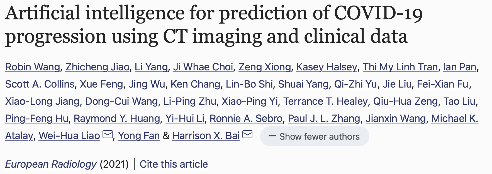
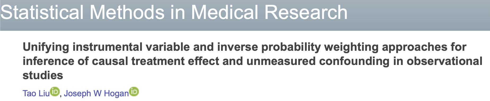
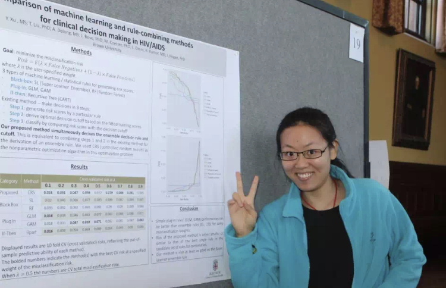

News
Kexin Qu accepted for poster presentation at the 3rd Annual Health Data Science Symposium
[October 28, 2021]The 2021 Symposium has an overall theme on Personal Data Modeling around "Smartphones, Wearables, and Health" and will take place at Harvard in Boston on Nov 5th, 2021. The poster is a joint work by Kexin Qu (PhD student), Dr Chris Schmid, Dr Tao Liu, and the I-STOP trial investigators. Congratulations, Kexin!
 Web
Web
AI prediction of COVID-19 progression published in European Radiology
Congratulations!!
 WebOur work on unifying instrument variable method and inverse probability treatment methods in causal inference is published in SMMR
[February 1, 2021]"Unifying instrumental variable and inverse probability weighting approaches for inference of causal treatment effect and unmeasured confounding in observational studies ". This is a joint work with Dr. Hogan.
Blake won Public Health Research Poster Award of 2020
[March 23, 2020]Congratulations to Blake for winning one of the Best Master’s Poster Awards. The poster is entitled “Understanding HIV Viral Rebound in ART Patients using EHR Data”. This is a collaboration project with Dr Curt Beckwith and the CNICS Network investigators.
Web

Yizhen's paper has been published in Stat in Med
[June 15, 2019]
The paper proposes a method for finding and cross-validating optimal binary classification rules
under a weighted misclassification loss.
Rules comprising a prediction score and an associated threshold,
where the score is derived using an ensemble learner.
Preprint
Yizhen Xu won ASA Best Paper Award
[October 2, 2017]
Yizhen was recognized as the first runner-up in the ASA's Risk Analysis Student Paper Competition for her paper
entitled "Classification using Ensemble Learning under Weighted Misclassification Loss ."
As a result, she received an award to defray the cost of attending the 2017 Joint Statistical Meeting (JSM) in August, taking place in Baltimore, MD.
Covariate-assisted pooling paper published in JAIDS
[August 23, 2017]Our work on covariate-assisted quantitative pooling strategies is published in JAIDS. The proposed pooling methods have the potential of providing more HIV+ people with resistance mutation monitoring while reducing clinical cost. The method is being validated in real clinical settings. Congratulations to all.

Congratulations to Yizhen for Best PhD Research Presentation Award
She gave a great presentation on “Comparison of machine learning and rule-combining methods for clinical decision making in HIV/AIDS”, which won the Public Health Research Day Best PhD Research Award.
Yanbing Wang won the Best Thesis Award
[May 20, 2017]
Congratulations to Yanbing for her thesis award entitled "Local Sensitivity Assessment of Discrete-Time Cox Regression to Informative Censoring with Application to an HIV-Care Engagement Study."
Renxia Huang won the Best Thesis Award
[May 15, 2014]
Her thesis "Routine Clinical Markers and Pooled Viral Load Strategy to Monitor Antiretroviral Treatment Failure in Resource-Poor Settings "
won the Best MS Thesis Award of this year. Congratulations!
Our method on optimal tripartite classification rules is published in JASA
[January 1, 2013]
Congratulations to all!
KM-ISNI paper published in Statistics in Medicine
[August 1, 2012]
This paper explores the sensitivity of the KM curve to nonignorable censoring by extending the index of
local sensitivity to nonignorability (ISNI) to the case of a nonparametric survival model.
The method involves, first, specifying a coarse-data selection model to describe the association
between the failure and censoring processes and then evaluating the slope of the nonparametric
survival MLE ordinate with respect to a nonignorability parameter in the neighborhood of the
ignorable model. We define the nonparametric MLE of the survival curve for a fixed value of the
nonignorability parameter and show in a simulation that ISNI analysis effectively captures local
sensitivity to nonignorability. The method measures sensitivity in the sense of identifying
functionals of the nonparametric MLE that nonignorability, if present, can affect substantially.